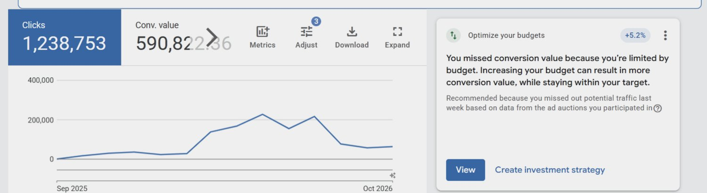

Six advertising accounts across Kenya, Uganda, Tanzania and Pakistan, each run as its own island, none reconciled against what actually sold. I consolidated them into one reporting structure, rebuilt the campaign architecture around it, and moved budget by cost per released vehicle rather than cost per lead — the two disagree, and only one of them pays wages.
- 73.4MImpressions
- 60,050Leads
- $0.29Per lead
- 359Campaigns